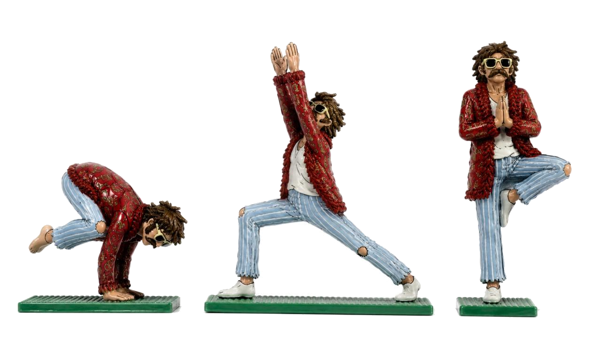

Divine Therapy
A Vèsse viaja para o consultório do Therapy Bureau:
a sala de espera onde a música conduz o transe e os velhos heróis são deixados na recepção.
A liturgia dos consultórios de outro século,
o alívio de quem finalmente larga o que carregava
e os house codes da casa.
